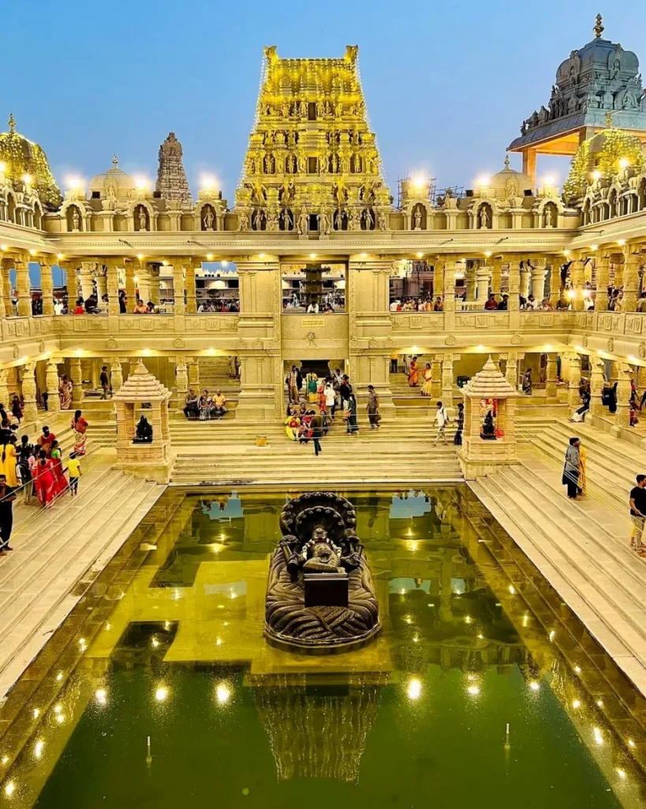
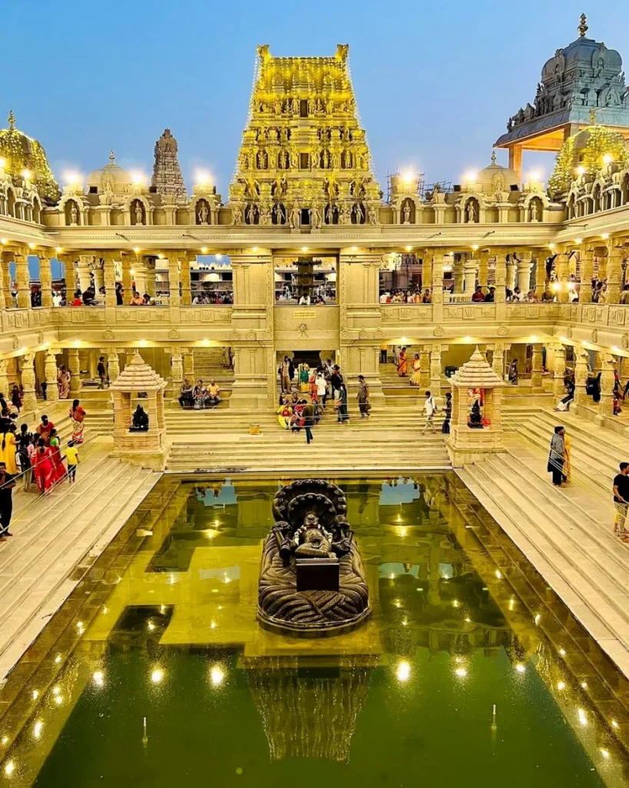
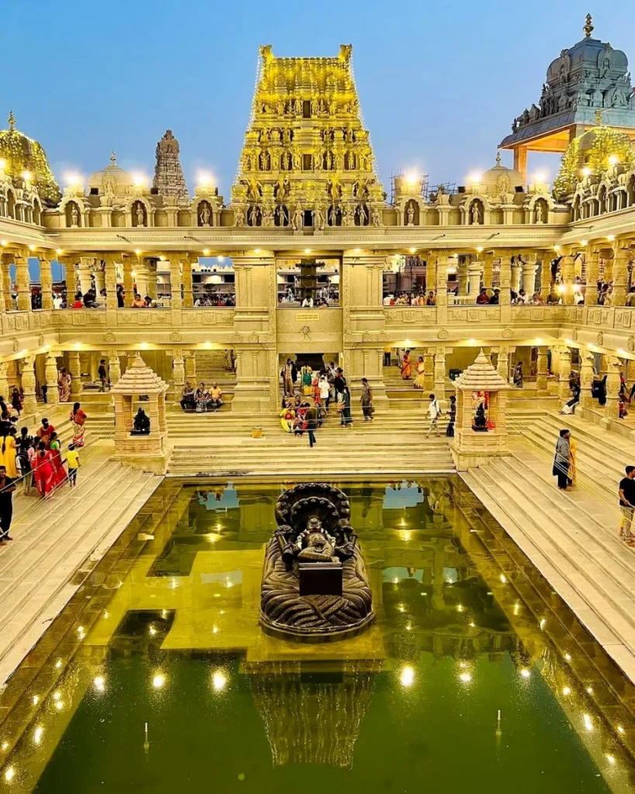
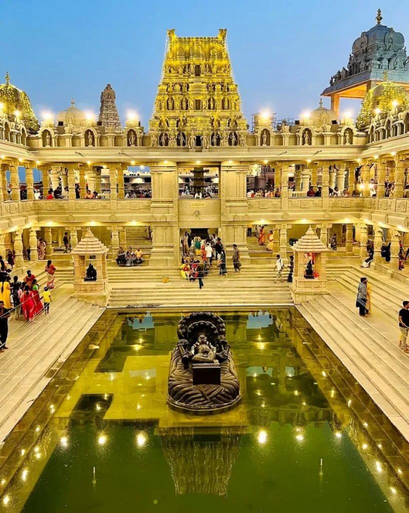

 

Hyderabad, the "City of Pearls," is a captivating fusion of 400-year-old history and rapid modernization. Its royal legacy is anchored by the iconic Charminar and the majestic Golconda Fort, while its soul is defined by the world-famous Hyderabadi Biryani.
Today, the city has transformed into "Cyberabad," a global tech hub hosting giants like Google and Microsoft within the sleek skyscrapers of HITEC City. This unique balance of Nizami culture and cutting-edge innovation makes it one of India's most dynamic and liveable metropolises.